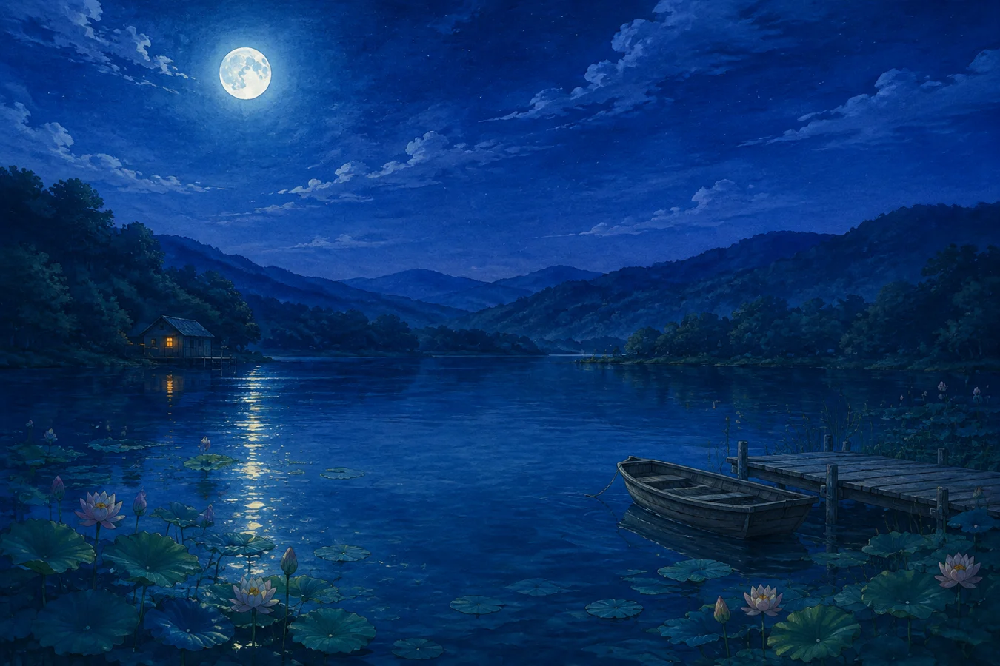

It fits around you.
Click-through lyrics, a tiny notch view, or a full desktop moment. Pick your presence.
For the songs you can’t leave in the background.
Floating lyrics, living worlds, and a place for your people.
The right words, right where you are. Cadence floats over your desktop while the rest of your day keeps moving.
SCROLL THROUGH THE EXPERIENCE / INTERACTIVE PREVIEW
Let the afternoon unfold
Somewhere in the
in-between.
We find a little room to breathe
Eight worlds, from a moonlit lake to a sky full of stars.
Scroll through the feeling. Then make it yours.

REMIX STUDIO / LIVE PREVIEWSomewhere in
the in-between.
A study in rhythm, shape, and the space between.
Turn it around. Pull it apart. Find your frequency.
Send the part that made you think of them. React to what’s on repeat. Keep a little history of the music that brought you together.
FRIENDS & CHAT / COMING IN THE NEXT RELEASEOne room code. Everyone in the moment.
Take turns setting the mood.
Monthly cards made to leave the chat.
Click-through lyrics, a tiny notch view, or a full desktop moment. Pick your presence.
Album artwork sets the palette. Your music brings the personality.
Karaoke, lyric games, holographic frames, and a few wonderfully unnecessary effects.
No Premium is needed for local lyrics, visuals, and playback controls. Some optional Spotify Web API features, including playing along on Windows, need your own developer connection. See the setup details ↗
Yes. Choose YouTube Music or Auto as your music source. Browser setup varies by operating system; Cadence walks you through the connection. Read the guide ↗
Cadence records the listening it observes while it’s open. Your monthly card shows your top five songs and artists, with listen counts for the songs. It doesn’t reconstruct your earlier Spotify history.
Yes. Cadence is free to download, made independently by MowkE. Have a question or found a bug? Visit the support page to get in touch.
Your favorite music. A little closer.